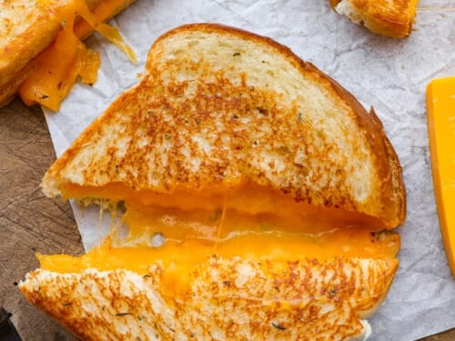

Grilled Cheese

Description
This childhood classic is filled with ooey gooey goodness. This easy recipe is a staple in our household.
Ingredients
- 2 slices - Sandwich bread
- 1 slice - American cheese
- 1/2 tbsp - Butter
Steps
- Heat up a small frying pan over medium heat. (A griddle set to 300°F can be used for larger batches.
- Coat pan with 1/4 tbps of butter. Then, place the first slice of bread in pan.
- Place cheese slice on bread. Then, place second slice on top.
- Use a spatula to smash the sandwich down. Let sit for about two minutes, or until bottom of the sandwich is golden brown.
- Flip the sandwich and wait until second slice is also golden brown.
- Remove the sandwich from the pan and serve with favorite chips.